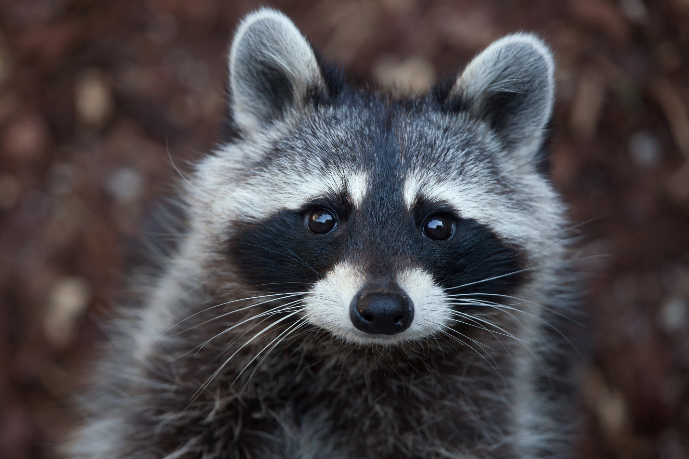

Brasileira é atacada por guaxinim em Miami e vira o meme do momento
A arquiteta Daniele Guardini Stancati ficou famosa da noite para o dia da maneira mais inusitada possível: sendo atacada por um guaxinim. A internet é mesmo um lugar onde tudo pode acontecer!
Moradora de Miami, a brasileira fez um post no Instagram mostrando o ocorrido, na última quarta-feira (25). De início ela simplesmente filma o animal de longe e, de repente, o guaxinim se aproxima del...
Felizmente ela está bem e amando o fato de que virou o meme da semana aqui no Brasil. Numa nova sequência de Stories, a arquiteta agradeceu pelo carinho e disse que está rindo muito da repercussão.Agora, a frase “olha o que é morar em Miami” virou a marca registrada do “caso do guaxinim”.
Ao final, realmente o vídeo serve de alerta. Apesar de fofíssimos os guaxinins podem ser perigosos. Daniele foi muito questionada sobre sua atitude em relação ao animal e garante que não mexeu com ele em nenhum momemnto.
“Eu sempre acreditei, e até falei para os meus filhos, que se você ficar quietinho o bichinho não vai te atacar, se você não fizer nada para ele. E não foi isso que aconteceu. Eu estava paradinha na porta do restaurante. Ele não estava acuado, estava atrás do vaso [de flores]. Se ele estivesse com medo de mim, ele teria ficado atrás do vaso, não teria saído de trás do vaso para pular na minha perna”, relatou a arquiteta.
Entrevistando o guaxinim
O guaxinim se recusa a dar entrevista, mesmo insistindo várias vezes, ele diz somente uma única coisa, veja:
"Eu tava bem loko nesse dia!"